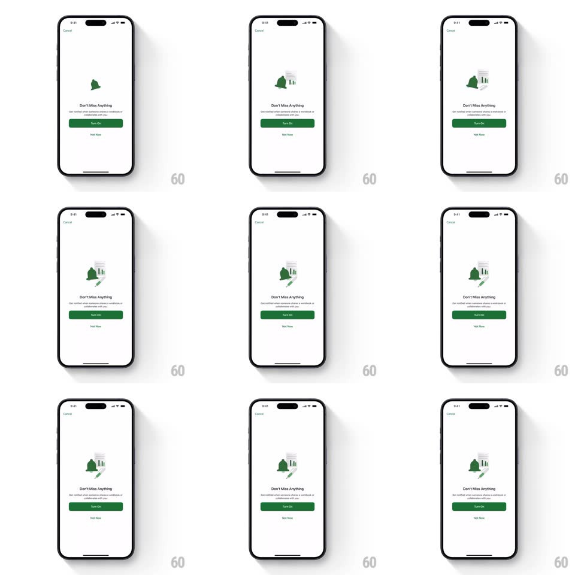

Media
Frame-by-frame

Rebuild this interaction 1:1: Microsoft Excel's notification empty state - a white sheet ("Don't Miss Anything", Turn On / Not now, Cancel top-left) where a green bell illustration swings playfully back and forth beside a tiny chart graphic, looping to invite enabling alerts.

Rebuild this interaction 1:1: Microsoft Excel's notification empty state - a white sheet ("Don't Miss Anything", Turn On / Not now, Cancel top-left) where a green bell illustration swings playfully back and forth beside a tiny chart graphic, looping to invite enabling alerts.
## Integration
Integration: stack-agnostic spec - springs given as stiffness/damping, timed motions as duration + curve; map every value to your framework and animation library of choice.
## Scene
White modal page: Cancel top-left, centered illustration (Excel-green bell with a small bar-chart card peeking behind it), "Don't Miss Anything" headline, one-line subcopy, green Turn On button and a Not now text button.
## Motion spec
Pattern: swinging bell loop.
- The bell rocks around its top pivot (rotate -14deg -> +14deg, 1.2s, ease-in-out at the extremes - a pendulum with soft turns).
- The bell's clapper counter-swings with a slight lag (rotate opposite phase, ~100ms delay) - two moving parts, one rhythm.
- The little chart card behind bobs gently (translateY +/-3px, same period, quarter-phase offset).
- A tiny "ring" burst (two short motion lines at the bell's shoulder) pops at each swing extreme (scale 0.5 -> 1 -> fade, 250ms).
- Every few loops the bell does a bigger double-ring (swing amplitude +30% for one cycle).
## Calibration
- Pivot is the bell's hanging point - rotation from anywhere else looks wrong.
- The motion reads as ringing, not wobbling - velocity peaks at center, eases at extremes.
## Reduced motion
Static illustration.
## Don't miss
- The green is Excel's brand green - the only strong color on the page besides the button.
- The chart card peeks from behind the bell's right shoulder - layered, not side by side.